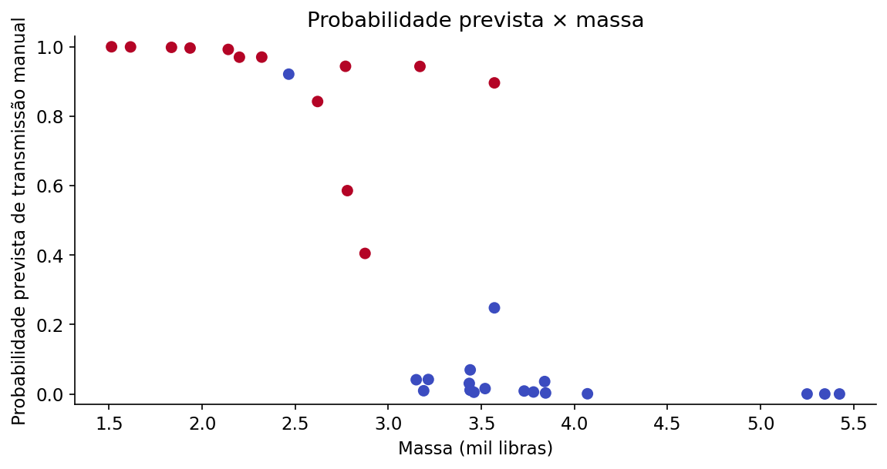

Regressão logística binária
Estima a probabilidade de um evento com dois resultados possíveis, como falha ou funcionamento.
01 · O que é?
Estima a probabilidade de um evento com dois resultados possíveis, como falha ou funcionamento.
02 · Pressupostos e como verificá-los
- Observações independentes (confira o delineamento amostral; se houver medidas repetidas, modele a dependência).
- Relação aproximadamente linear entre cada preditor contínuo e o logito da probabilidade (examine splines ou gráficos de resíduos parciais).
- Ausência de separação completa ou quase completa (verifique advertências de convergência e coeficientes excessivamente grandes).
- Quantidade suficiente de eventos e não eventos (inspecione frequências por classe e a precisão dos intervalos de confiança).
- Ausência de multicolinearidade excessiva (examine correlações e fatores de inflação da variância).
- Calibração e capacidade discriminativa avaliadas em dados de validação (curvas de calibração e medidas de classificação).
Confira o delineamento da pesquisa e os gráficos exploratórios. A validade inferencial depende dos pressupostos do modelo, não apenas do resultado de um teste diagnóstico.
03 · Hipóteses e estatística de teste
Hipóteses
Estatística, estimador ou critério de ajuste
Em que:
- \(\pi(\mathbf x)\)
- probabilidade de ocorrência da classe 1 para as covariáveis x
- \(\beta_0\)
- intercepto
- \(\boldsymbol\beta\)
- coeficientes de regressão
- \(\mathbf x\)
- vetor de preditores
- \(\operatorname{logit}(p)\)
- logaritmo da razão p/(1-p)
Os valores amostrais são obtidos diretamente dos dados; os estimadores, pesos ou coeficientes específicos são calculados pelas funções do R indicadas no exemplo. Não substitua parâmetros desconhecidos por valores arbitrários.
04 · Como interpretar os resultados?
\(p<0{,}05\) evidencia associação do preditor; \(\exp(\widehat\beta)\) é razão de chances, não razão de probabilidades. \(IC_{95\%}\) deve ser interpretado na escala OR.
Além da decisão ao nível de 5%, examine a direção e a magnitude do efeito, seu intervalo de confiança e a adequação dos pressupostos. Um valor-p não quantifica a importância prática do resultado.
05 · Como executar no R?
Examine os dados, execute a análise e compare os resultados com os valores e gráficos apresentados a seguir.
Copie o código para o RStudio ou baixe o arquivo .R para executar o exemplo completo.
06 · Exemplo de aplicação
Contexto dos dados
Em mtcars, am indica transmissão manual (1) ou automática (0); wt e hp são características explicativas.
Objetivo da análise
Estimar a probabilidade de transmissão manual com base nas características do veículo.
# Regressão logística binária ----
# Ajuste e resultados ----
ajuste <- glm(am ~ wt + hp, data = mtcars, family = binomial())
print(summary(ajuste))
print(exp(cbind(Razao_de_chances = coef(ajuste), confint.default(ajuste))))
prob <- predict(ajuste, type = "response")
print(table(real = mtcars$am, previsto = as.integer(prob >= 0.5)))
# Visualização e diagnóstico ----
plot(mtcars$wt, prob, pch = 19, col = ifelse(mtcars$am == 1, "#12372A", "#C68A3B"),
xlab = "Massa (mil libras)", ylab = "Probabilidade estimada de transmissão manual")
abline(h = 0.5, lty = 2)
Saída numérica para conferência
Valores recalculados independentemente com os mesmos dados; a formatação da saída pode diferir da apresentada pelo R.
==============================================================================
coef std err z P>|z| [0.025 0.975]
------------------------------------------------------------------------------
Intercept 18.8663 7.444 2.535 0.011 4.277 33.455
wt -8.0835 3.069 -2.634 0.008 -14.098 -2.069
hp 0.0363 0.018 2.044 0.041 0.001 0.071
==============================================================================
Razões de chances (OR = odds ratio):
Intercept 1.561455e+08
wt 3.085967e-04
hp 1.036921e+00Gráfico dos dados

A razão de chances (odds ratio, OR) é exp(β). Ela multiplica as chances do evento por unidade adicional do preditor, mantendo os demais constantes; não representa diretamente uma razão de probabilidades.
Resultados e interpretação
O código apresenta uma sugestão de aplicação; a análise deve ser adaptada aos dados e ao objetivo do estudo.

Prof. Dr. Cássius Henrique Xavier Oliveira
Professor · ICTIN/UFLA · Estatística, Confiabilidade e Ciência de Dados.
Conheça minha trajetória e projetos →